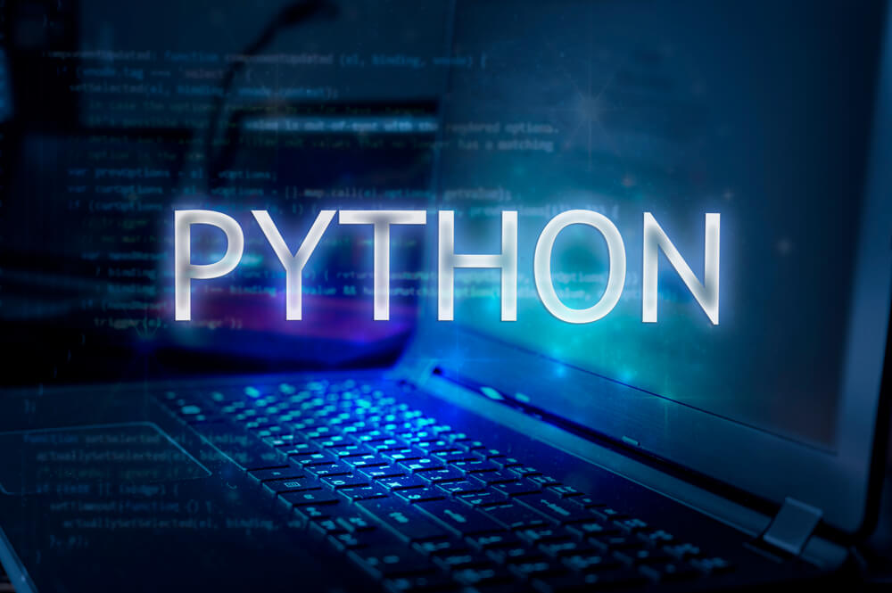
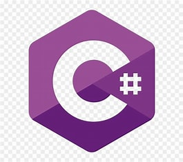

home
musicas
aulas
planos
contato
Prof. Ajax

Aulas de [Programação]
Python

Python é uma linguagem de programação de alto nível,versátil, usada em uma variedade de
domínios,
como desenvolvimento de web, ciência de dados, inteligência artificial, entre outros.
Além de possuir uma grande
comunidade de desenvolvedores e uma vasta biblioteca padrão.
Java
 Java é uma linguagem de programação orientada a objetos,de propósito geral e de alto nível.
Java é uma linguagem de programação orientada a objetos,de propósito geral e de alto nível.
É conhecida por sua portabilidade,
pois os programas java podem ser executados em qualquer
dispositivo que tenha uma máquina virtual java(JVM) instalada, além de ser amplamente
utilizada
no desenvolvimento de aplicativos móveis(Android), desenvolvimento de software empresarial, entre outros.
C#

C# é uma linguagem de programação desenvolvida pela Microsoft, projetada para a plataforma
.net, orientada a objetos,
semelhantes ao java, mas com influências de c++.É amplamente
utilizada no desenvolvimento de aplicativos windows, e jogos por meio da Unity.
JavaScript
 JavaScript é uma linguagem de programação de alto nível, interpretada e multi-paradigma,
JavaScript é uma linguagem de programação de alto nível, interpretada e multi-paradigma,
desenvolvida principalmente na web front-end, permitindo interatividade em páginas web.
Além de ser amplamente utilizada no desenvolvimento de aplicativos web back-end(node.js),
aplicativos móveis e muitas outras áreas.